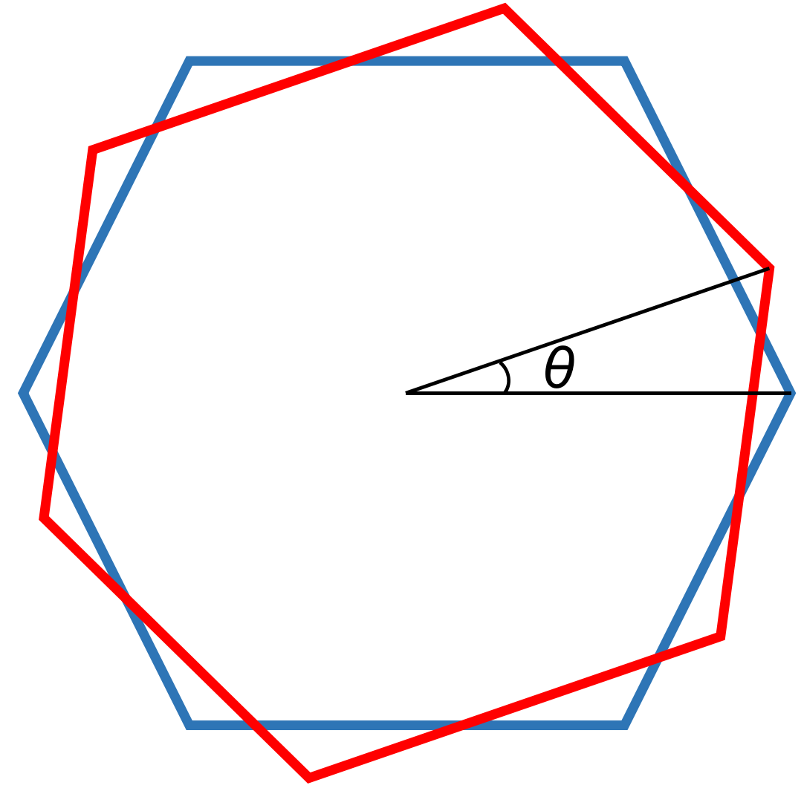
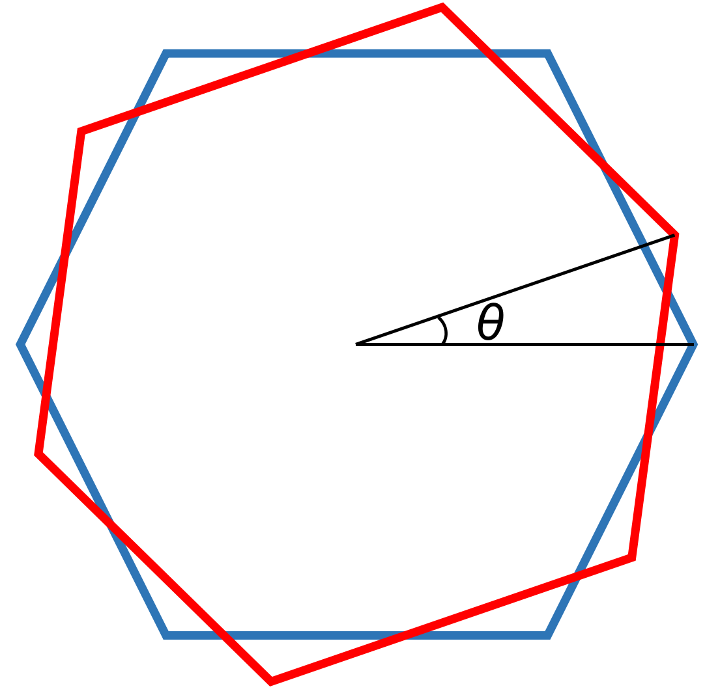

All links in this webpage will be opened in a new tab in your Internet browser.
Research
My primary interest is condensed matter physics, especially strong-correlated many-body system, quantum Hall effect and superconductivity in relation to topology and geometry, and topological effects in two-dimensional materials. Both the theoretical analysis and experimental exploration are exciting to me.
Many-body theory is one of the important tools in the study of condensed matter. My undergraduate research covered classical many-body theory and chaos, quantum many-body theory and its applications in condensed matter physics and nuclear physics, computational methods such as density functional theory, and computational simulation of three-body problem.
I am also in belief that many modern mathematical tools and ideas, such as non-commutative ring theory, low-dimensional topology, knot theory, and the principle of duality, can promote the study of condensed matter. This exactly matches my long-lasting enthusiasm for the structure and the shape of physics, which means, in mathematical language, algebra and geometry in relations to physics. A research project in such areas requires the understanding of a lot of advanced knowledge. So, during my undergraduate years, I took the most rigorous courses in abstract algebra (group, ring, module, algebra, field and Galois, category), differential geometry, basic algebraic topology, mathematical analysis, complex analysis, and partial differential equations.
Wigner Crystal state in twisted bilayer graphene
This project is advised by Dr. Brian Skinner at the Ohio State University.
Consider a ton of electrons moving on a two-dimensional nertralizing material, or say \(\mathbb{R}\)2 if you like. Due to the repulsive Coulomb interaction, these electrons, in order to minimize the electrostatic energy, will crystallize and form a lattice when the electron density is less than a critical value. The electron's state with lowest electrostatic energy is called the Wigner crystal state. It can be proved that the Wigner crystal state in two dimension is of an equilateral-triangle lattice. See the figure below.
A sheet of graphene consist of a single layer of carbon atoms arranged in a two-dimensional honeycomb lattice: each vertex takes the position of a single carbon atom and each edge represents either a single or a double carbon-carbon bond; two kinds of bond are symmetrically alternated. Two graphene sheet overlapped with a twisted angle is called the twisted bilayer graphene. See the figures below.
 

This project is aim at finding the theoretical range of the electron density for the Wigner crystal state to exist on a twisted bilayer graphene. So there are three lattices on the plane. The first task is to find the average density per Wigner–Seitz cell of Wigner crystal with the assumption that the lattice is infinitely large; this is done in the reciprocal lattice space. The next task is to use Lindemann criterion to find the critical electron density which causes the Wigner crystal melts, or say the equilateral-triangle lattice breaks. The twisted bilayer graphene can provide a different effective value of the fine structure constant and formalism of electric potential; those effects will be investigated.
Current Result: The project is currently under the first stage. Please check my ongoing note.
Becchi-Rouet-Stora-Tyutin (BRST) Theory in Density Functional
This project is advised by Prof. Richard Furnstahl at the Ohio State University from January 2020 to present.
The aim of this project is to start a trial of applying BRST method to deal with the degrees of freedom in Mexican hat problem and other constrained systems. Mexican hat potential energy is a significant model in theoretical study of symmetry, largely due to its continuous family of global minima which is called the moduli field in quantum field theory. The BRST method is from the idea of quantization of gauge theory. The project requires a relatively deep physical understanding of BRST theory, including the constrained systems, ghost, and quantum gauge theory. M. Henneaux and C. Teitelboim's Quantization of Gauge Systems gives a good introduction of these. This project also utilizes the density functional approach of many-body system.
Current Result: I am currently at the beginnin stage of this large project. Started from September 2020, I am studying the quantum gauge theory; see the ongoing study note.
Mass Density and Velocity Distribution of Dark Matter Haloes
This project was advised by Dr. Annika Peter at the Ohio State University in summer 2019 and was supported by Physics Department as 2019 Summer Undergraduate Research; scholarship $3500.
The basic assumption of this research project is that dark matter (DM) is made up by a new kind of particle. Based on different types of DM particle, many theoretical models of DM are developed. The cold dark matter (CDM) is made up by the particles where the interaction between each two of them is Newtonian gravitation only; self-interacting dark matter (SIDM) is made up by the particles where the second interaction exists in addition to Newtonian gravitation. In either case, DM is believed to exist around galaxies and is thus called DM haloes; the smaller galaxies in a large galaxy are surrounded by DM subhaloes. By comparing to the observation data, the mass density distribution and velocity distribution of DM (sub)haloes can help us find and abandon incorrect theories.
To do this, I need to first use our theoretical models to simulate and describe the DM haloes. The key tools I utilized are AREPO, a massively parallel gravitation and finite-volume magnetohydrodynamics computer program coded by Prof. Volker Springel before 2010, and its predecessor GADGET-2, a smoothed-particle hydrodynamics computer program coded also by Prof. Springel before 2005. I ran them on Pitzer cluster of Ohio Supercomputer Center with Navarro–Frenk–White profile as the initial conditions. I investigated both CDM and SIDM cases by setting different values of cross section for different strengths of the second force. The outputs are HDF5 files, and I used Python3 to plot the position scenarios and further used Amiga's Halo Finder (AHF) to analyze mass density and velocity distributions.
Result: The result was presented as a poster at the end of the summer research program.
[In Class] Two- and Three-Body Problems under Newtonian Gravitation
This in-class project initially aims to fulfill the final project of Physics 6810 at the Ohio State University; the instructor is Prof. Ralf Bundschuh. The code uses Euler method and Runge–Kutta method to solve the equations of motion of two and three point masses under Newtonian gravitation. An error analysis and several sample plots of trajectories can be found in the documentation.
I am currently switching the programming language from Python to C and rewriting the documentation.
Current Result: The Python-language version is hosted at my GitHub repository. The C-language version is not yet available.